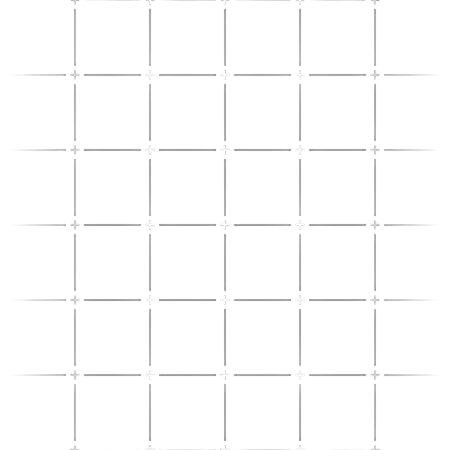

"เราสร้าง AI Chatbot นี้ขึ้นมา ไม่ใช่เพียงเพื่อทำนายอนาคต แต่เพื่อคำนวณหา 'ลัคนา' (Ascendant / Rising Sign) ด้วยความแม่นยำทางคณิตศาสตร์ ซึ่งเหนือชั้นกว่าการดูดวงราศีแบบทั่วไป
ภารกิจของเราคือการสร้าง 'เพื่อนคู่คิดดิจิทัล' (Digital Companion) ที่คอยให้คำแนะนำโดยอ้างอิงจากข้อมูลทางโหราศาสตร์ที่ผ่านการวิจัยและรวบรวมมาอย่างละเอียดตลอดปีการศึกษานี้.

Social Proof
ทำไมใครๆ ก็มู? จากผลสำรวจพบว่า คนไทยกว่า 85% มีความเชื่อเรื่องโชคลางและสิ่งศักดิ์สิทธิ์เป็นที่พึ่งทางใจ โดยเฉพาะในกลุ่ม Gen Z และ Millennials ที่กว่า 70% เลือกใช้ 'วอลเปเปอร์สายมู' หรือ 'เบอร์มงคล' เพื่อเสริมความมั่นใจในการทำงาน...
เพราะในโลกที่เหนื่อยล้า พลังงานที่ดีคือแต้มต่อที่ทุกคนต้องมี